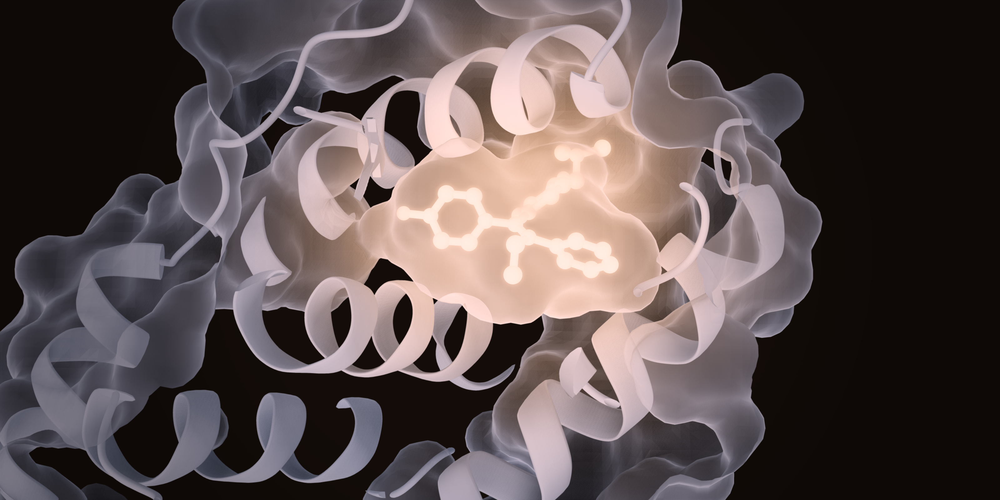
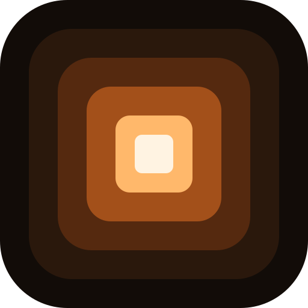
chimenodesShaders for
ChimeraX.
MolecularNodes-style rendering for UCSF ChimeraX. Soft ambient occlusion, satin materials, filmic tone mapping and per-atom emission with bloom, all in real time and in every save image and movie record.
chimenodes preset mn_defaultchimenodes glow :LIG strength 3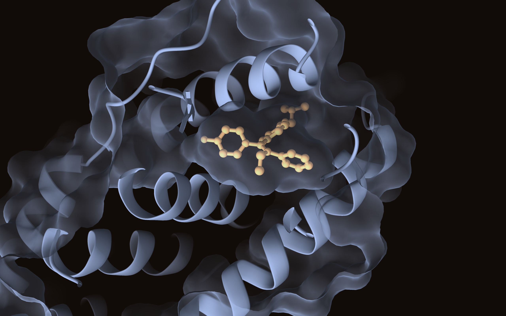
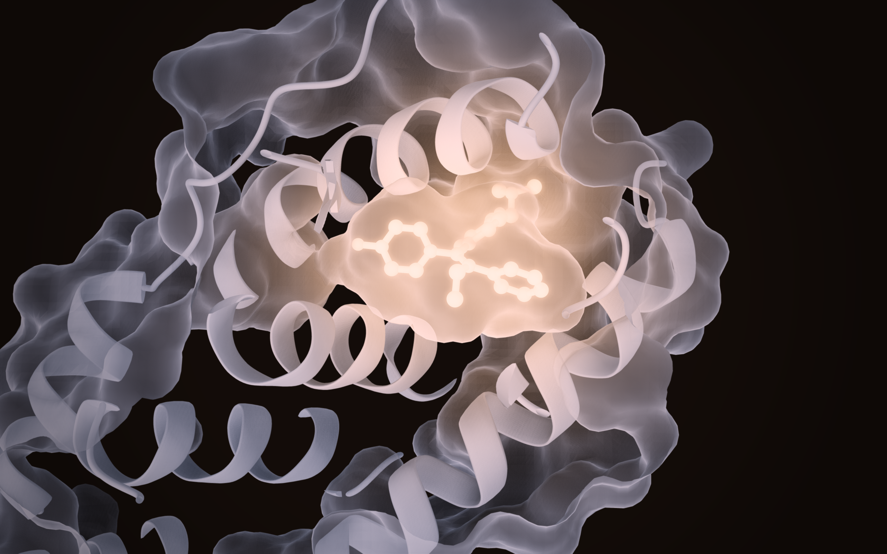
chimenodesChimeraX defaultchimenodes preset mn_default ao 1 glow 0.7 tonemap agxchimenodes glow :OHT strength 3 color #ffb86b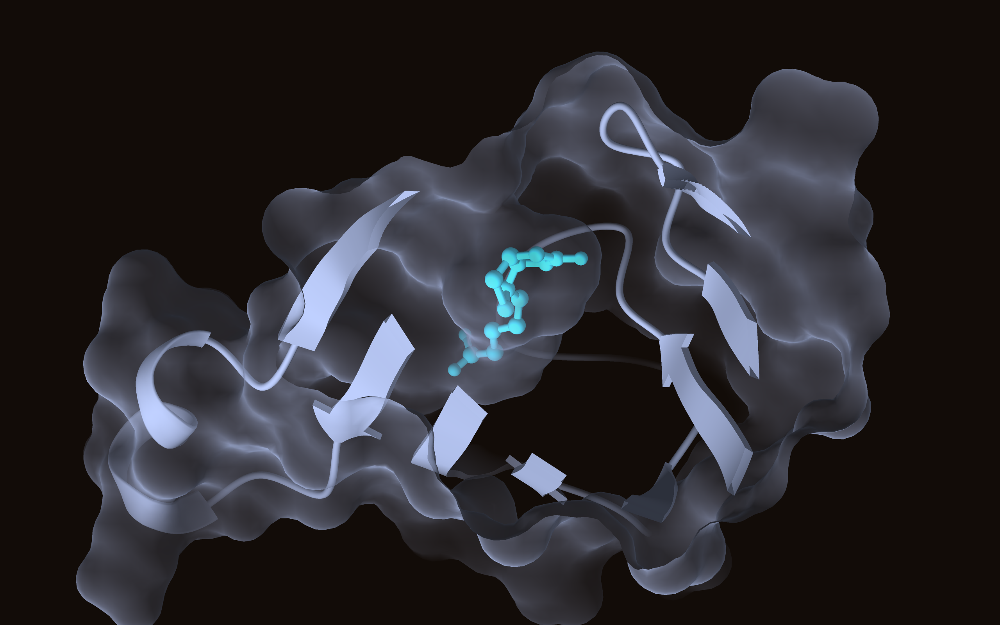
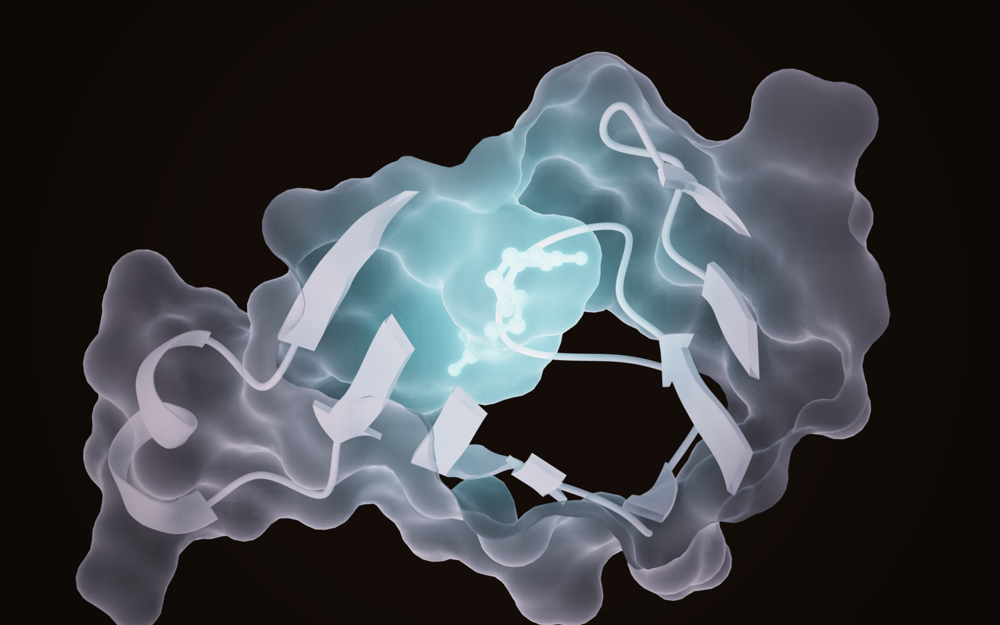
chimenodesChimeraX defaultchimenodes preset mn_default ao 1 glow 0.7 tonemap agxchimenodes glow :BTN strength 3 color #2fe3ff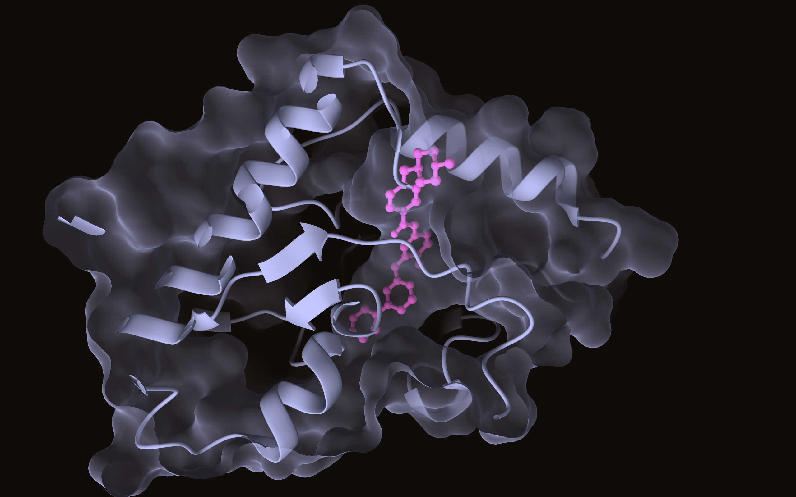
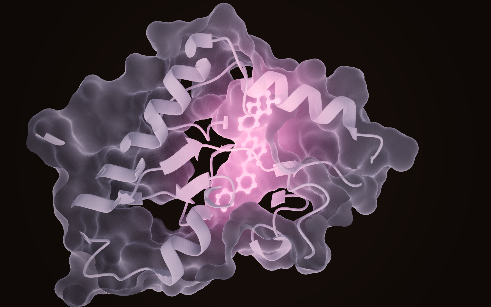
chimenodesChimeraX defaultchimenodes preset mn_default ao 1 glow 0.7 tonemap agxchimenodes glow :STI strength 3 color #ff4fd0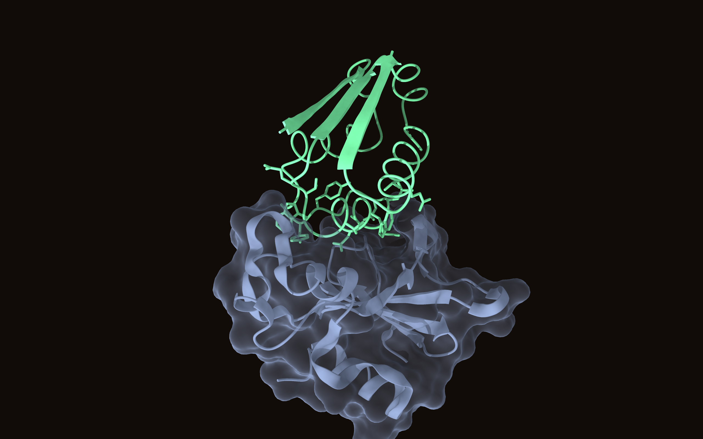
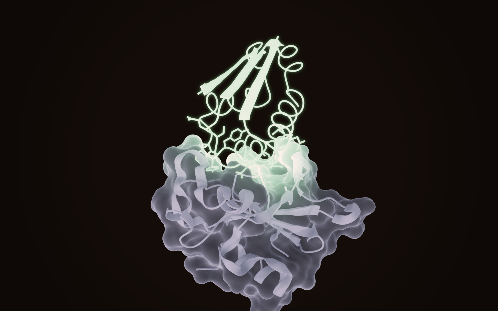
chimenodesChimeraX defaultchimenodes preset mn_default ao 1 glow 0.7 tonemap agxchimenodes glow /D strength 0.5 color #7dffb0chimenodes glowLight 2.2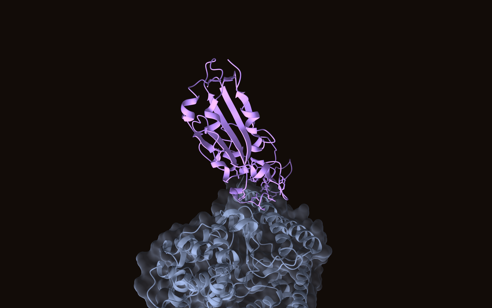
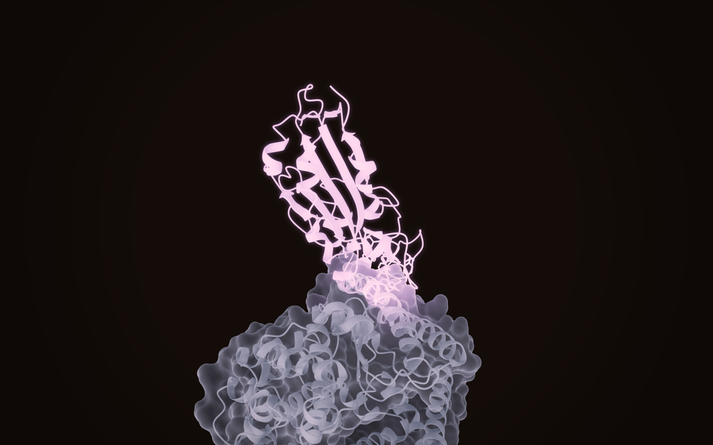
chimenodesChimeraX defaultchimenodes preset mn_default ao 1 glow 0.7 tonemap agxchimenodes glow /E strength 0.5 color #b78cffchimenodes glowLight 2.2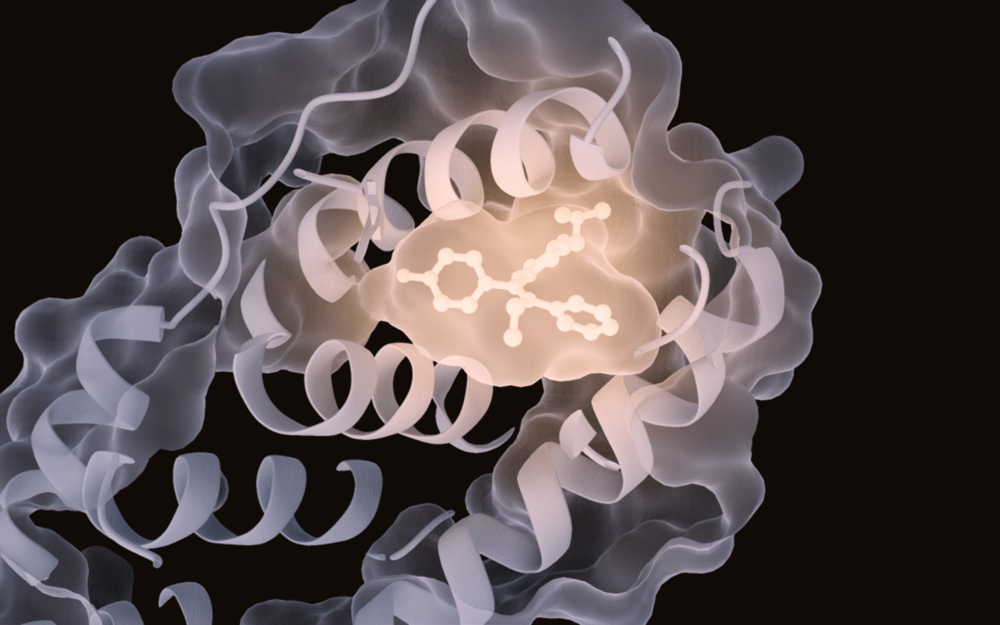
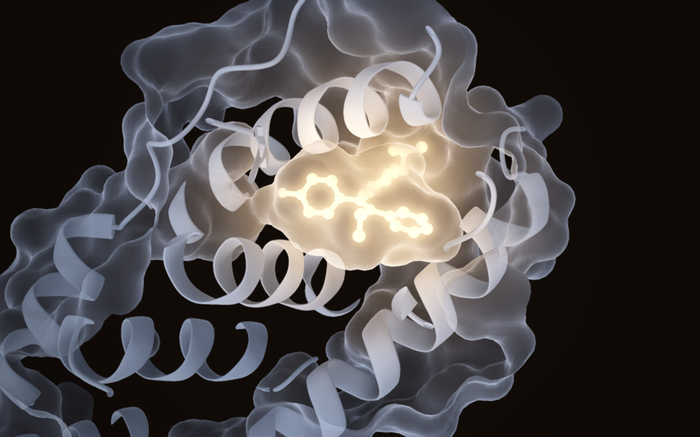
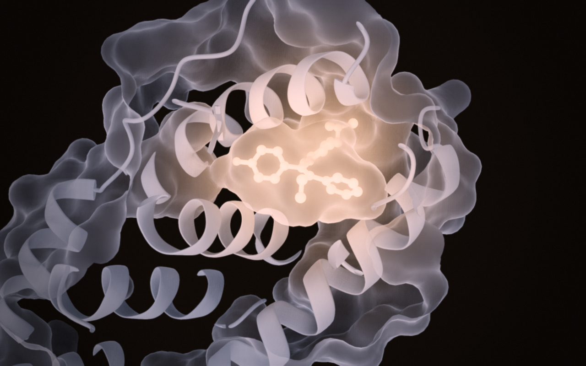
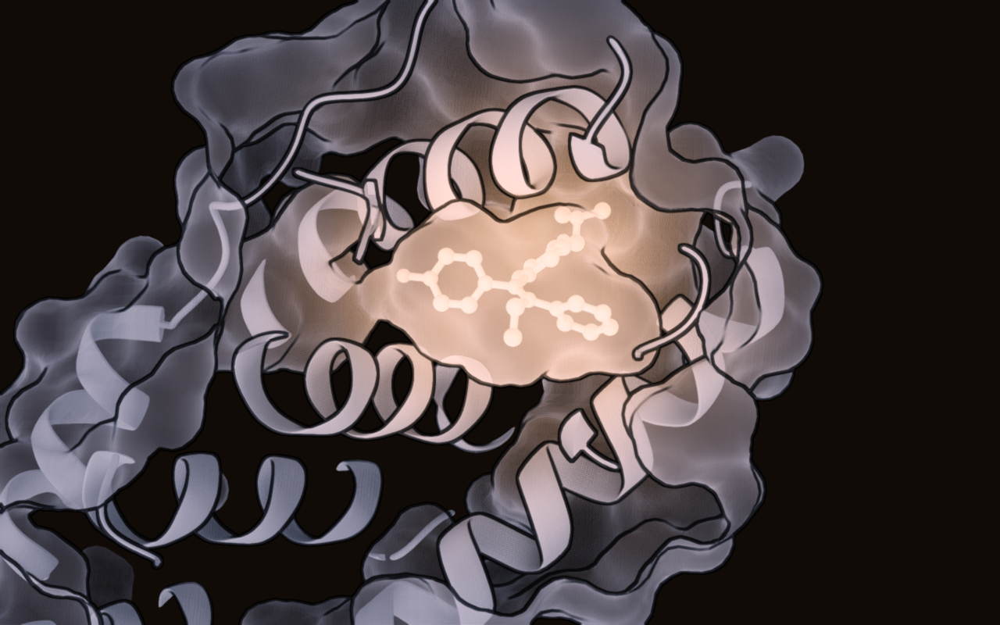
chimenodes preset neonchimenodes dof 1 aperture 0.7chimenodes outline 0.8chimenodes tonemap agx exposure 0.25A post-process chain on top of ChimeraX's own renderer.
The scene is drawn once into a floating-point buffer, glowing atoms are drawn again as pure emission (surfaces dim it, cartoons stay dark), and a short chain of fullscreen passes finishes the frame. A pass whose effect is off is skipped (with every effect off, stock ChimeraX renders untouched), and a failing pass disables itself without breaking rendering.
- HDR captureScene plus depth into a 16-bit float buffer.
- EmissionPer-atom
glow, colour normalised to full brightness so dark chains glow as well as light ones. - BloomDual-Kawase blur pyramid with a soft knee.
- LookAmbient occlusion into albedo, satin shading, rim light.
- LensDepth of field and outline from linear depth.
- FilmAgX tone mapping, vignette, grain and FXAA.
OpenGL 3.3 coremacOS, Linux, WindowsChimeraX ≥ 1.8One line. No Python setup.
The installer finds ChimeraX, then builds and installs the bundle with ChimeraX's own bundled Python, so you don't need system Python, uv, pixi or git.
curl -fsSL https://raw.githubusercontent.com/anirudhbhashyam/chimenodes/main/install.sh | shThen, in ChimeraX: open 1brs · chimenodes preset mn_default · chimenodes glow /D strength 0.5
chimenodes offsh install.sh --uninstall